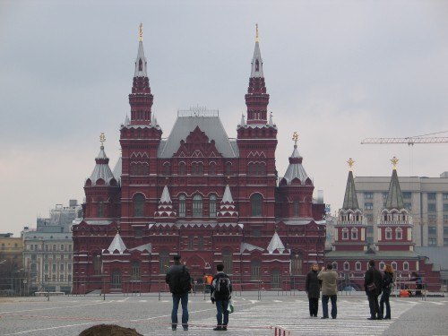

За 132 года существования Государственный Исторический музей оправдал надежды его основателей и почитателей.
Собрание музея достигло почти 4,5 млн. предметов, документальные фонды насчитывают более 12 млн. листов.
Историческое здание музея на Красной площади полностью отреставрировано, интерьеры восстановлены в первоначальном виде, проведена частичная реконструкция, и инженерное оборудование соответствует современным требованиям.
Сохраняя вековую традицию, зал за залом создается новая стационарная экспозиция по истории России с древнейших времен до начала XX века. Передача Государственному Историческому музею соседнего здания бывшего Музея В.И.Ленина позволит в дальнейшем представить в экспозиции историю XX века, как неотъемлемую часть и продолжение историко-культурной традиции страны.
За последние шесть лет организовано около 200 разнообразных выставок в стенах музея, в регионах России и за рубежом. Эта деятельность получила высокую оценку – в 2003 году творческий коллектив ГИМ удостоен Государственной премии России.
Научные труды сотрудников музея, каталоги крупных выставок, сборники статей научных конференций получили заслуженное признание и популярность у специалистов и всех интересующихся историей России, ее духовной и материальной культурой.
Вместе с филиалами ГИМ перешагнул миллионный рубеж по посещаемости, хотя длительный перерыв на ремонт и реставрацию сказывается и сегодня. Мы стремимся обогащать информационный потенциал экспозиций и выставок для посетителей, вводя современные компьютерные и проекционные технические средства, расширяя состав традиционной печатной продукции.
Судьба сложилась так, что все здания музея, а их более 20, являются памятниками истории и культуры федерального значения и требуют ежегодной, последовательной реставрации и хозяйского ухода. Сегодня нам не стыдно за состояние и внешний образ таких выдающихся памятников отечественной архитектуры, истории и культуры, как Покровский собор на Красной площади, Новодевичий монастырь, Палаты бояр Романовых на Варварке, сохранение которых государство доверило музею. Это одновременно огромный труд реставраторов и строителей, которые многие годы выполняют работы по заказу музея.

Вернуться на главную страницу